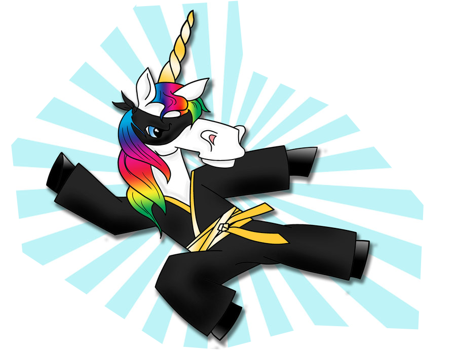

<div class="heading-area">
  <h2 class="heading--title">CSS Filters:</h2>
</div>

<div class="live-code-area">
  <div class="img-area">
    
  </div>

  <div class="style-box-area">
  <style class="code-editor" contenteditable>.ninja-unicorn {
  // -webkit-filter: blur(20px);
  // -webkit-filter: brightness(1.5);
  // -webkit-filter: contrast(1.5);
  // -webkit-filter: drop-shadow(10px
                     10px 10px hotpink);
  // -webkit-filter: grayscale(.8);
  // -webkit-filter: hue-rotate(50deg);
  // -webkit-filter: invert(.8);
  // -webkit-filter: opacity(.1);
  // -webkit-filter: sepia(.6);
  // -webkit-filter: saturate(4);
}</style>
  </div>

<aside class="notes">
  filters
</aside>
